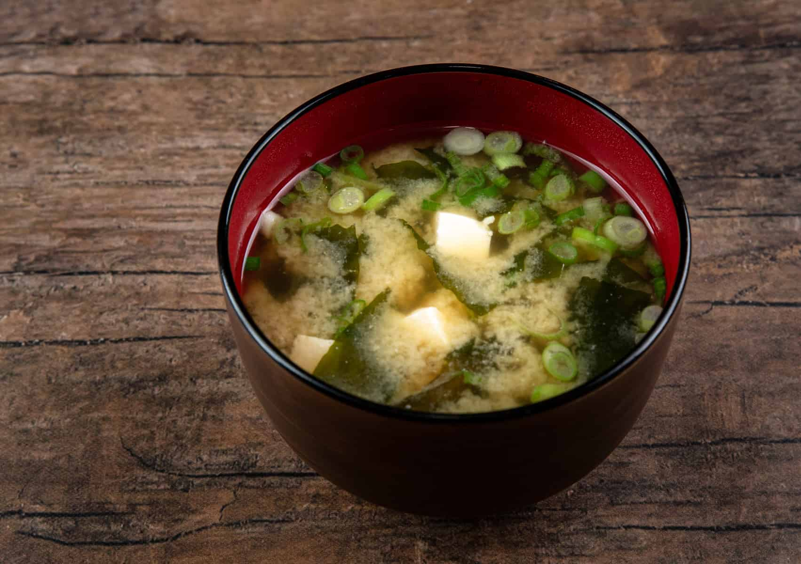

Nikujaga (Japanese Meat & Potato Stew)
Oyakodon (Chicken & Egg Rice Bowl)

Miso soup is a traditional Japanese soup made by dissolving miso paste into a dashi stock, usually served alongside rice as part of a classic meal.